깔 프로그램도, 가입도 없습니다.
쓰던 글을 붙여 넣고 버튼 두 번이면 끝이에요.
| 무엇 | 값 |
|---|---|
| 제작기 주소 | epibrief.github.io/ebook/maker.html |
| 발행 코드 | 안내글에 적힌 코드 (주소를 만들 때만 필요) |
| 잠금 코드 | 내가 아무거나 정합니다 (책을 잠글 때만) |
주소를 누르면 이 화면이 나옵니다. 설치할 것은 없습니다.
왼쪽은 내가 글을 넣는 곳, 오른쪽은 책이 미리 보이는 곳입니다. 왼쪽에 한 글자만 고쳐도 오른쪽 책이 바로 바뀝니다.
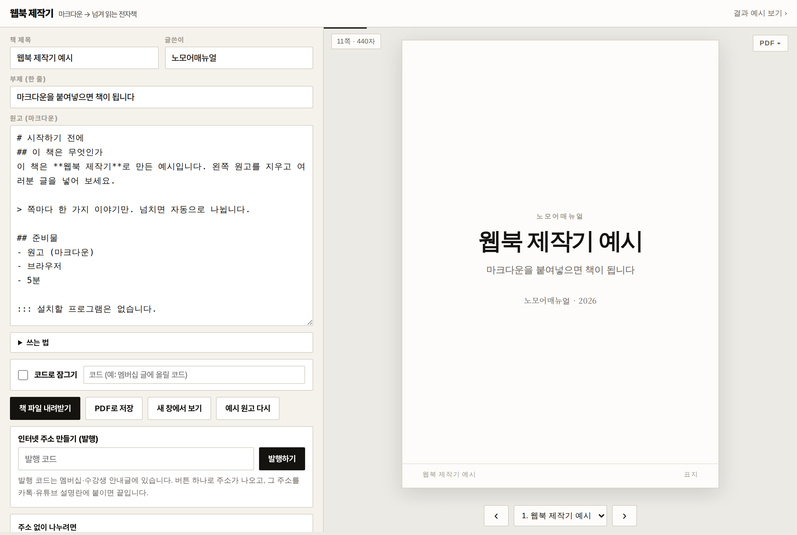
책 제목, 글쓴이, 그리고 본문. 이게 전부입니다.
글은 평소 쓰던 대로 쓰면 됩니다. 클로드나 챗GPT가 써 준 글을 그대로 복사해 붙여 넣어도 됩니다.
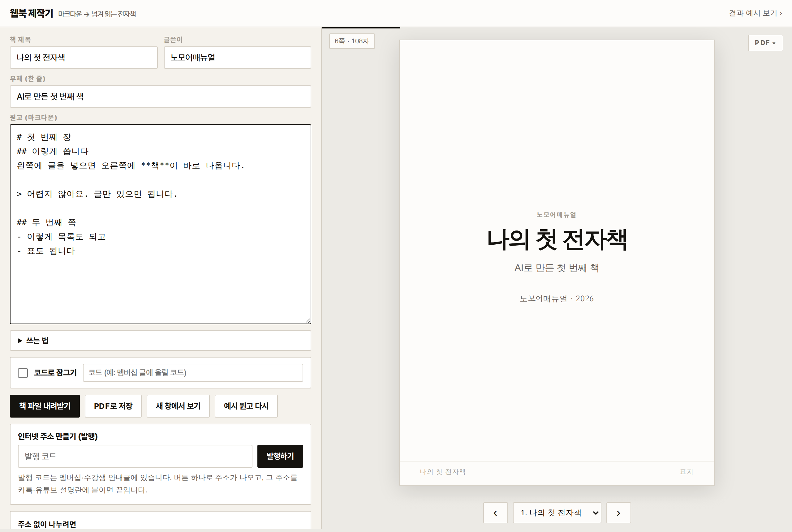
왼쪽 위 작은 글씨에 지금 몇 쪽인지 나옵니다. 글이 길어지면 알아서 쪽이 늘어납니다.
기호 두 개만 알면 됩니다. # 과 ##
글 맨 앞에 우물 정(#) 기호를 붙이면 그게 제목이 됩니다. 하나면 큰 장, 두 개면 작은 쪽입니다.
| 이렇게 쓰면 | 이렇게 됩니다 |
|---|---|
| # 1장 시작하기 | 새로운 장. 표지와 차례가 저절로 생깁니다 |
| ## 준비물 | 새로운 쪽 |
| **중요** | 굵은 글씨 |
| > 문장 | 눈에 띄는 인용 상자 |
| - 항목 | · 점 목록 |
| ::: 메모 | 회색 메모 상자 |
| --- | 여기서 쪽 나누기 |
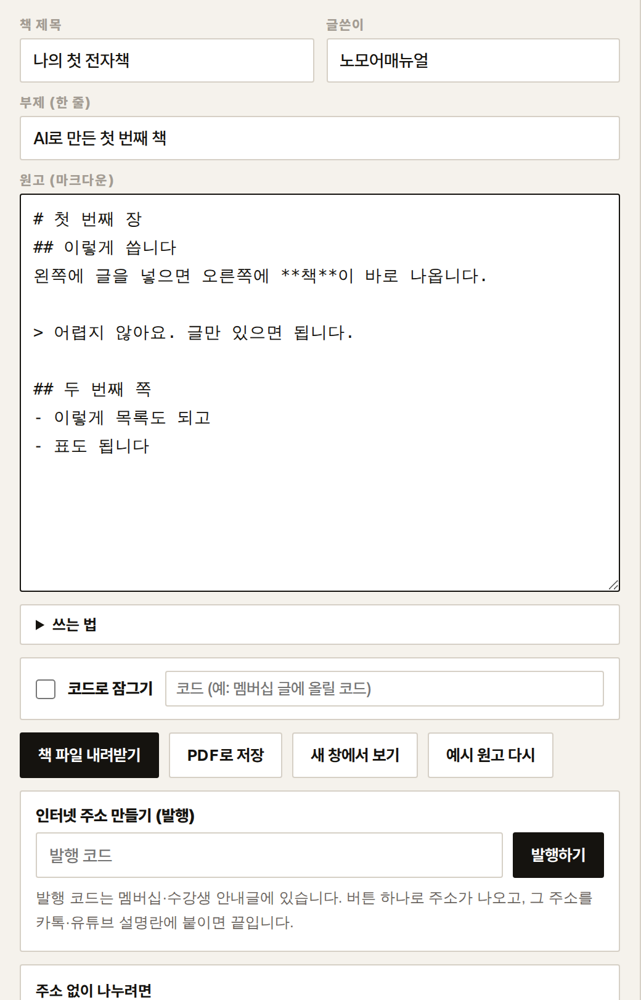
나누는 방법은 세 가지. 상황에 맞는 걸 고르면 됩니다.
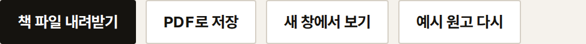
안내글에 적힌 발행 코드를 넣고 버튼 한 번.
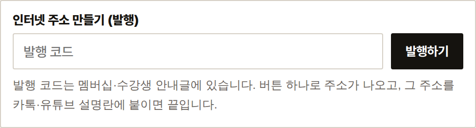
몇 초 기다리면 인터넷 주소가 나옵니다. 주소 복사를 누르고 카톡, 블로그, 유튜브 설명란 어디든 붙이세요.
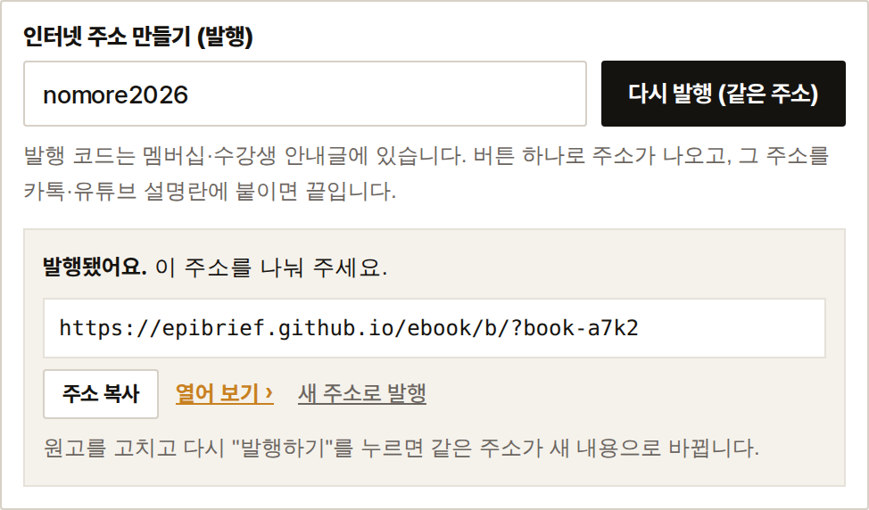
돈 받고 파는 책, 멤버십 전용 책을 만들 때.
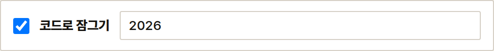
잠근 책은 주소를 알아도 코드 없이는 한 글자도 안 보입니다. 코드는 멤버십 글이나 구매하신 분께만 알려 주세요.
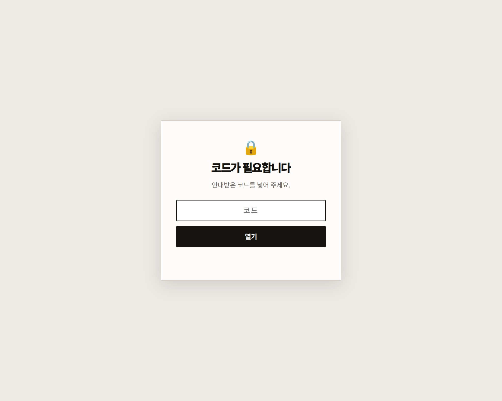
이렇게 나옵니다. 종이책처럼 한 장씩 넘어갑니다.
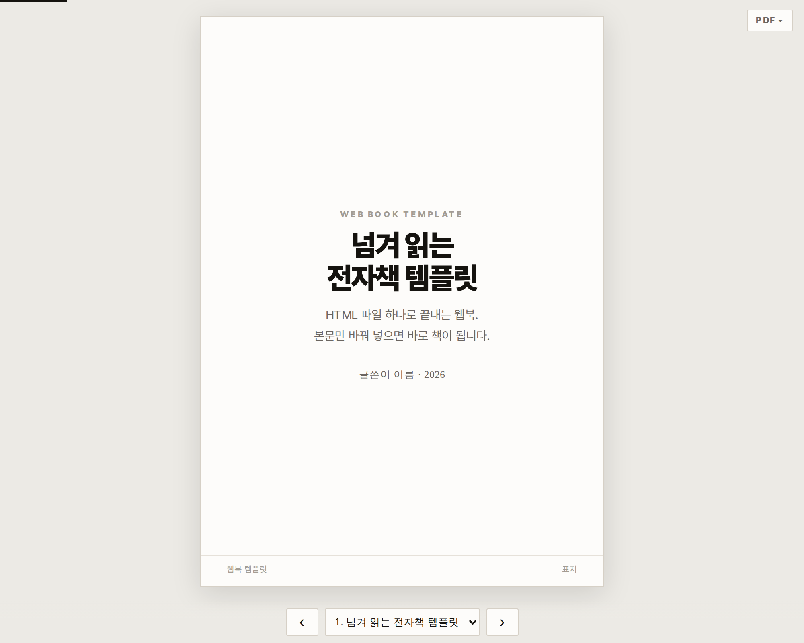
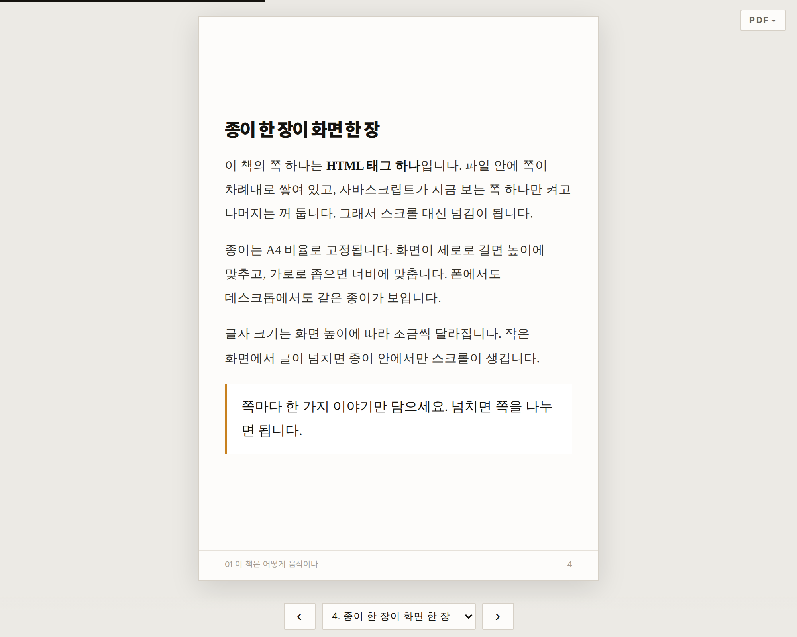
| 독자가 하는 것 | 방법 |
|---|---|
| 다음 쪽 | › 단추, 키보드 → , 손가락으로 밀기 |
| 목차로 이동 | 아래 목록에서 고르기 |
| PDF로 받기 | 오른쪽 위 PDF 단추 |
| 이어 읽기 | 다시 열면 보던 쪽부터 (저절로) |
컴퓨터가 없어도 됩니다.
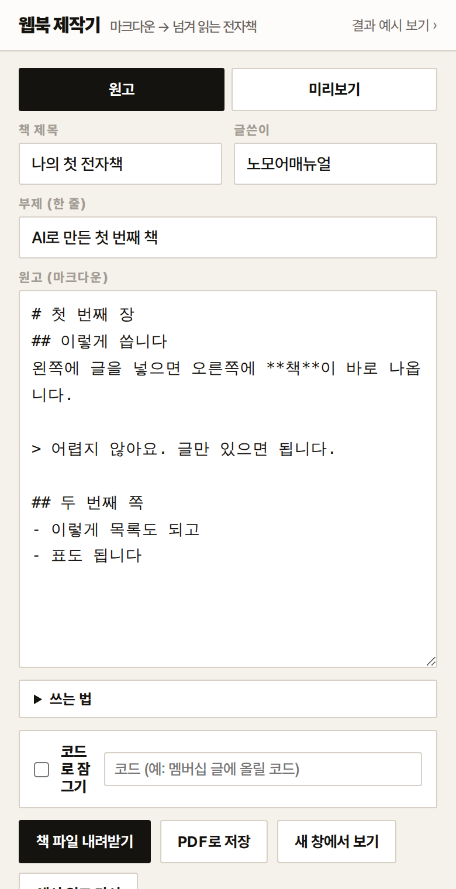
다만 글을 길게 쓰실 거면 컴퓨터가 편합니다. 폰은 확인하고 주소 보내는 용도로 쓰시면 좋아요.
| 이런 일이 | 이렇게 하세요 |
|---|---|
| 글이 안 보여요 | 오른쪽 미리보기가 빈칸이면 잠시 기다리세요. 그래도 비면 새로고침. |
| 발행이 안 돼요 | 발행 코드를 다시 확인하세요. 띄어쓰기가 들어가면 안 됩니다. |
| 주소를 눌렀는데 안 열려요 | 화면을 아래로 당겨 새로고침하세요. 예전 화면이 기억돼 있을 수 있습니다. |
| 쪽이 너무 빽빽해요 | 나누고 싶은 자리에 --- 를 한 줄 넣으세요. |
| 글을 날렸어요 | 쓰던 글은 이 브라우저에 저절로 저장됩니다. 다시 열면 그대로 있습니다. |
이 제작기로 만든 책들입니다. 눌러서 직접 넘겨 보세요.
| 책 | 무엇 |
|---|---|
| 세미나 기록 | 행사 영상·요약·질의응답을 한자리에 (가상 견본) |
| 논문 읽는 법 | 강연 영상을 시간 목차와 함께 정리한 예 |
| 설교 묵상 노트 | 주일 설교를 본문 해설·묵상 질문으로 |
| 업무 자동화 (잠김) | 55쪽 입문서. 코드를 넣어야 열리는 책의 예 |
| 잠금 예시 | 코드 1234 를 넣어 보세요 |